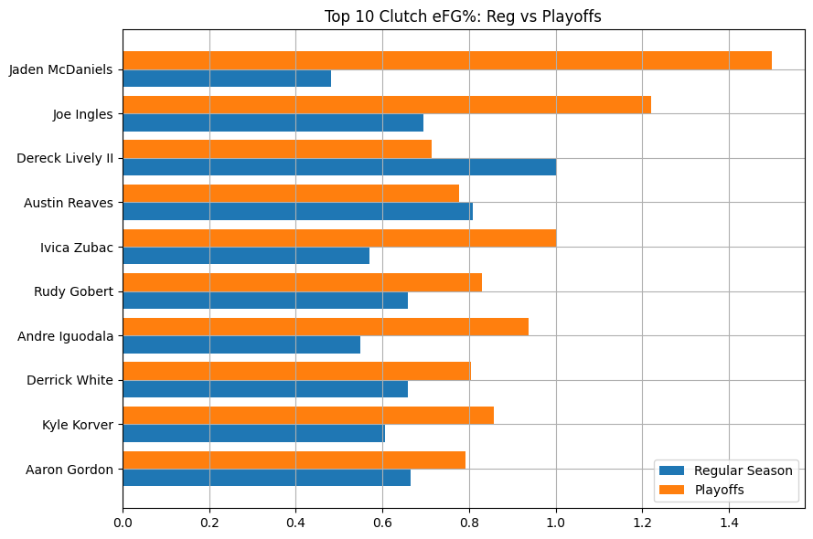
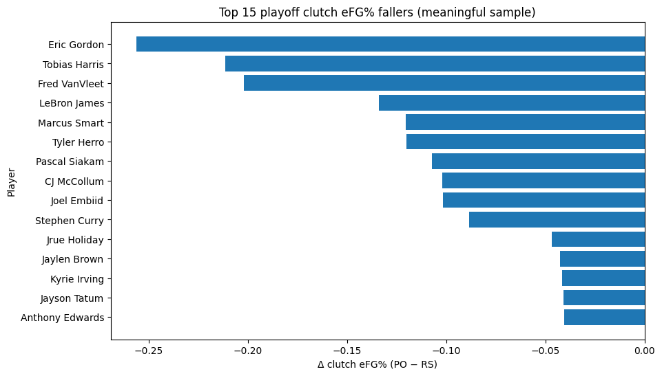
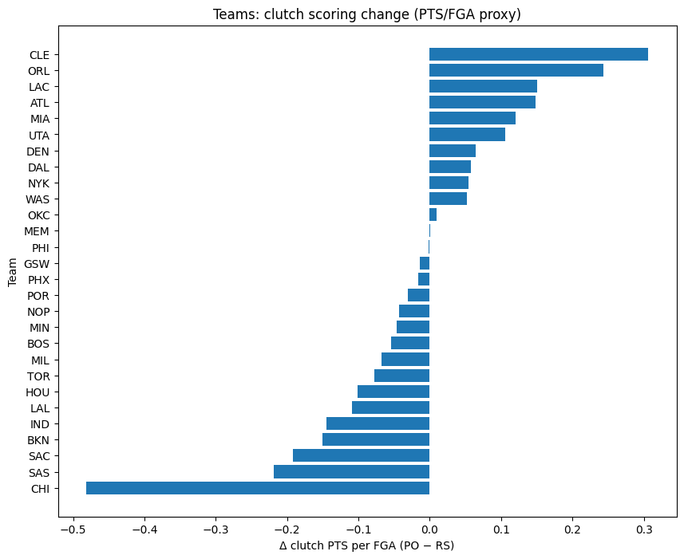
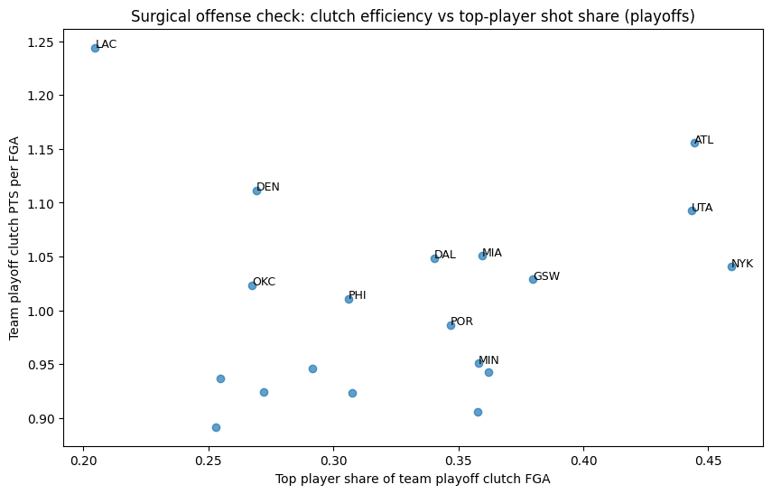

Beyond the Hero Moment
By Esma Demirkan | January 09, 2026

Do we know what clutch really means?
When people talk about being “clutch,” they usually mean one thing: the hero moment. For a lot of fans, that instantly brings to mind Kawhi Leonard’s shot over Ben Simmons, still insane to this day. Moments like that stick with us for a reason. But they can also flatten what clutch performance actually is. One shot can be unforgettable without being fully representative.
Being clutch is about more than a single possession. It’s about how a player performs every time the game tightens up, when the pressure is at its highest and mistakes suddenly matter way more than they did earlier. Those are the moments that don't always end in a buzzer beater, but ultimately decide who wins.
NBA clutch time is defined as the final five minutes of a game when the score is within five points. These minutes feel and look very different from the rest of the game. The pace slows, defenses are extra locked in, and teams know exactly who they want to take away. What interested me most wasn’t just who could hit a big shot, but who stayed consistent when the entire environment changed.
Player Clutch Efficiency
One thing that stands out immediately is that clutch efficiency isn’t only dominated by superstars. Here in this chart, we can see that several role players consistently make shots at a high level late in games, and some actually become more efficient once the playoffs start. Players like Joe Ingles, Aaron Gordon, Jaden McDaniels, and Ivica Zubac aren't the usual guys we see dominating headlines, but they excel by taking smart shots and staying within the flow of the offense.
At the same time, some higher-usage stars see slight efficiency drops in the playoffs. This is a clear sign of how difficult it is to maintain efficiency when defenses are specifically designed to stop you. Efficiency in these moments comes from decision-making and IQ just as much as talent.
Who can Stay Consistent
Looking closer at individual players, there are clear examples of players whose clutch efficiency drops noticeably in the playoffs. Many of these players are still elite talents, but the postseason exposes how thin the margin for error really is. Shot quality decreases, defensive attention increases, and the looks that were available in the regular season are much harder to find.
This is a very clear example of how unforgiving the playoffs really are. Even small inefficiencies become magnified due to every possession mattering much more.
Team Level Clutch
At the team level, the playoff shift becomes even more clear. Some teams actually score more efficiently in clutch situations once the postseason begins, while others struggle to maintain the same level of execution they showed during the regular season. This is where individual shot making is not enough, what matters more is a team’s offense functioning when defenses are prepared and possessions slow down.
A good example of this is the Cleveland Cavaliers and the Los Angeles Clippers, both teams show positive changes in clutch scoring efficiency during the playoffs. These teams are able to generate better shots late by keeping the ball moving, creating multiple options, and avoiding rushed or forced attempts when the pressure is high.
On the other end, teams like the Chicago Bulls and San Antonio Spurs see a clear decline in clutch efficiency once the playoffs begin. As we can see, this makes their offense more predictable late in the game, making it easier for playoff defenses to lock them down and force difficult shots.
Star Dependency
For teams, one of the most interesting patterns is how efficiency relates to reliance on a single player. Some teams, like the LA Clippers and Denver Nuggets are able to score efficiently late in playoff games without relying on most of their shots being taken through one star. Everyone playing is making a direct impact. These teams tend to have balanced offenses, a clear team plan, and multiple players capable of making decisions under pressure.
Teams like the New York Knicks and Atlanta Hawks on the other hand, heavily rely on one player to clutch up. While that approach can work, it also makes teams much easier to defend because the defenses know exactly where the ball is going. Clutch consistency can’t always come from one player taking over, it comes from an offense that remains organized and flexible even when defenses know what’s coming.
Conclusion
As much as we all love an exciting buzzer beater, true clutch performance doesn't come from luck or one iconic moment. It’s about consistency when the margin for error is almost zero. Looking across efficiency, team scoring changes, playoff risers, fallers, and offensive structure shows that clutch success can take many forms.
Some players elevate when the pressure rises, others struggle to maintain the same efficiency, and some teams thrive because their offense doesn’t fall apart when defenses are locked in. In the playoffs, where every possession is hunted down and every mistake is magnified, the ability to generate good shots late matters more than having a single hero.